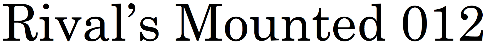
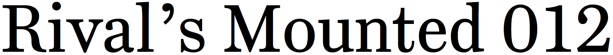
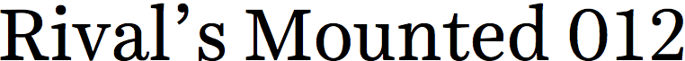

century schoolbook

century supra
miller

harriet
ingeborg
The
I include the Century Schoolbook system font on my list of
The Scotch category is full of better options. A few of my favorites are Miller (named after the Edinburgh foundry), Harriet, and Ingeborg. I’ve also designed my own take on this style called Century Supra, which brings together things I like about a number of Scotch-style faces from the early- to mid-1900s.
The Computer Modern fonts that are part of TeX are based on Scotch Roman, because it’s also been a popular style for math and scientific typesetting.
Century Schoolbook is used in the PDF opinions of the United States Supreme Court, and countless law-school textbooks as well.